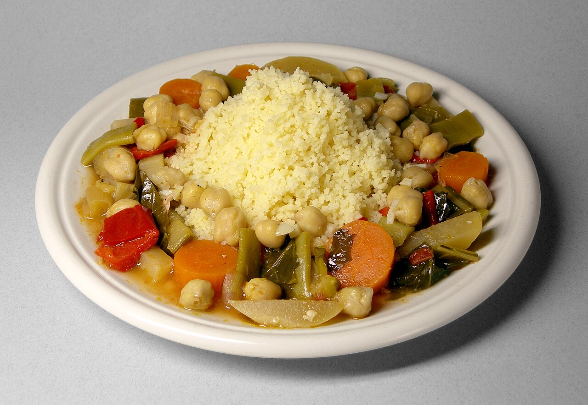
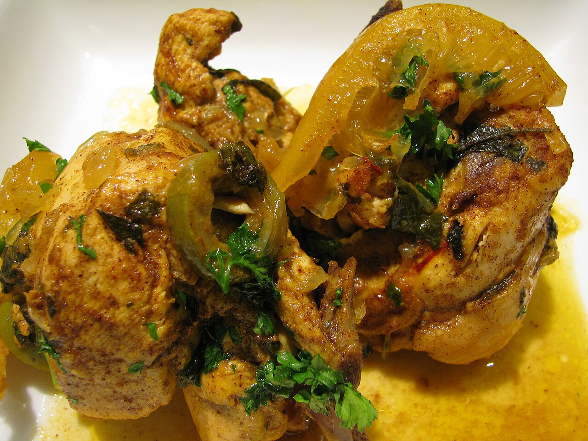
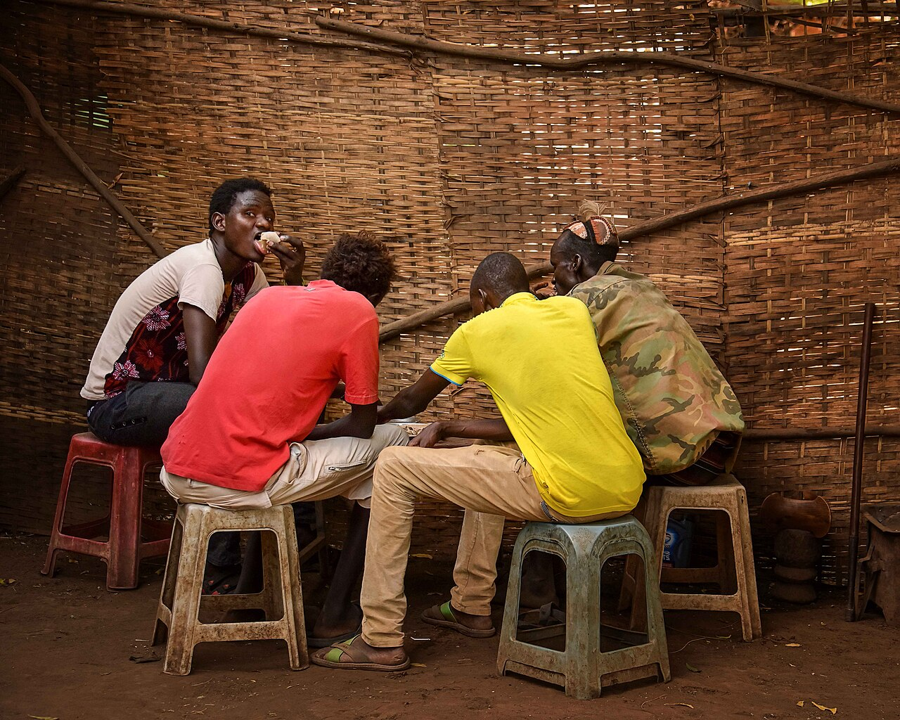
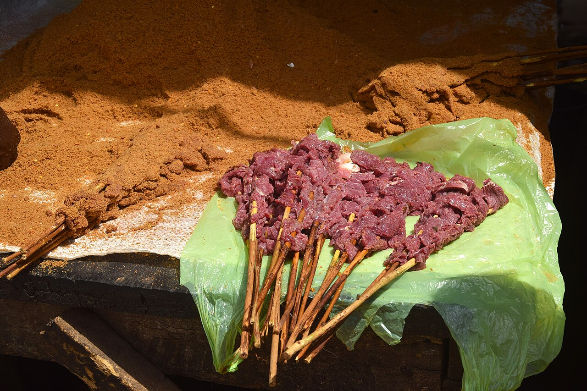
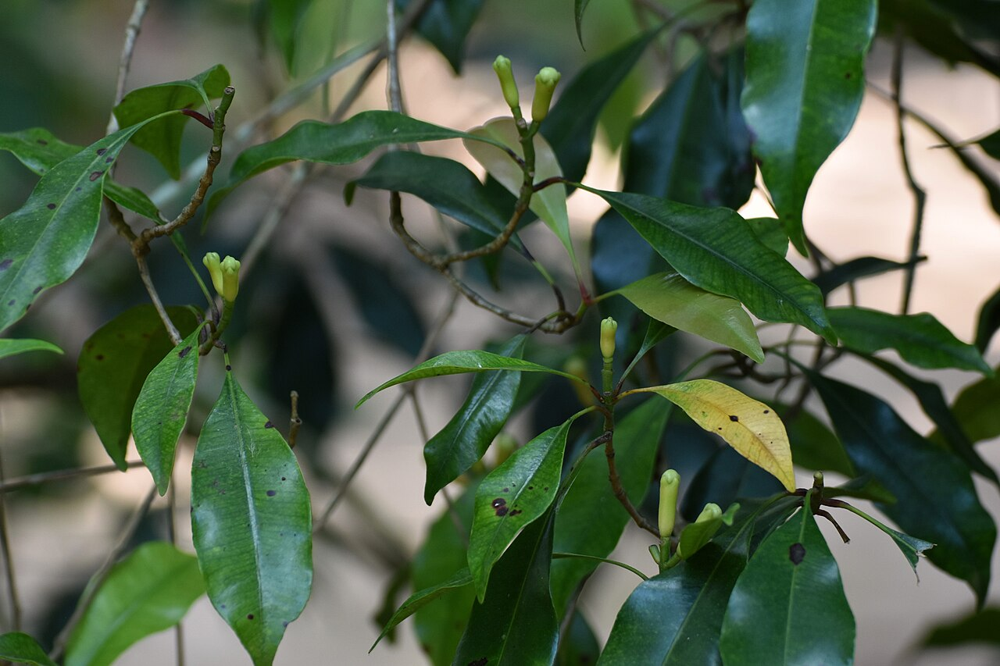

Couscous goes global
Steamed couscous, a Berber staple, is turning up on menus worldwide as chefs rediscover its hand-rolled tradition.
Journey through a continent of flavour. From smoky jollof in Lagos to fragrant tagines in Marrakech and spicy berbere in Addis Ababa, discover the recipes and stories behind Africa's tables.
Explore recipesFour signature dishes that tell the story of the continent. Each is built on key ingredients such as tomatoes, teff, saffron and cassava leaves.

A smoky, tomato-rich one-pot rice that headlines every celebration across West Africa.
Get the recipe →
Chicken slow-cooked with preserved lemons and olives in a conical clay pot.
Get the recipe →
Spongy fermented teff flatbread used to scoop up spicy Ethiopian stews.
Get the recipe →

Steamed couscous, a Berber staple, is turning up on menus worldwide as chefs rediscover its hand-rolled tradition.

Nigerian suya skewers, rubbed with spicy yaji peanut spice, are now a favourite at international food festivals.

Cloves, cardamom and cinnamon from the spice island are inspiring a new wave of Swahili cuisine.